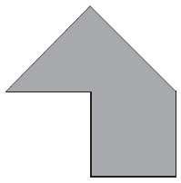
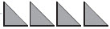
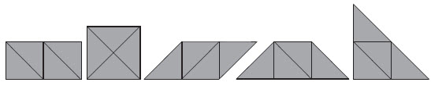
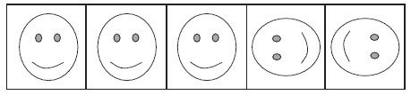
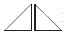
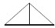
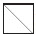

钱金铎
2009年，教育进展国际评估组织对全球21个国家进行的调查结果显示，中国孩子的计算能力排名世界第一，而想象力却排名倒数第一，创造力排名倒数第五。在中小学生中，认为自己有好奇心和想象力的只占4.7%，而希望培养想象力和创造力的只占14.9%。面对这一结果，一些教育家的结论似乎很熟悉——“中国孩子的创造力和想象力都被传统教育扼杀了”。且不说教材的编写和教学的形式确实存在一些问题，就在我们相当一部分小学数学教师的思维和教学行为中，要让学生千方百计地提高解题能力都是念念不忘的。所以，教师在日常教学中总会寻找各种训练题，叫学生练习解答。当然，在新课程标准提倡的教学理念和学习方式的影响下，努力做到先引导学生尝试练习、后教师讲解，先学生动手操作、再师生交流等，不能不说是一种明显的进步。但老师们往往忽视了“图形与几何”教学中的一个重要环节——如何让学生自觉地进行有效的动态想象。试想，在教学过程中，连让学生想的时间、想的空间和想的平台都没有，怎么能够增强学生的想象能力和空间观念呢？为此，我特提出在以下三个方面实施动态想象的有效性策略。
《数学新课程标准》描述了空间观念主要表现在：能由实物的形状想象出几何图形，由几何图形想象出物体的形状，进行几何体与其三视图、展开图之间的转化。这是一个包括观察、想象、比较、综合、抽象的分析，不断地由低到高向前发展的认识客观事物的过程，是建立在对周围环境直接感知的基础上的，对空间与平面相互关系的理解和把握。然而，有些数学教师在“空间与图形”的教学中，更多的是关注个体单独的图形概念，忽视了基本图形之间的联系与区别；关注图形静止状态下的知识教学，忽视了图形之间的转化过程的教学。即便这能让学生进行图形的动态想象，也是一些学生所谓的自主想象——用几个基本的几何图形拼成你自己喜欢的图形（或物体）。从表面上来看，也是让学生进行动态想象，但由于这个动手操作活动的目标是由学生随机而定的，可想而知，其数学思维的含量肯定会大大降低——只会停留在原来低级的思维层面上。下面的教学过程中，教师引导学生进行有目的的动态想象，不但能使学生对几何图形知识有静态意义上的认识，而且使学生通过有效的动态想象，对观察到的图形在头脑中记忆的表象进行再一次的提取、改造和重组，使想象活动更具有方向性，让这一学习过程“活”起来，让学生从形状、特征、方位、变换等多种角度来感知图形、认识图形，达到真正发展学生空间观念的教学目的。
［片段写真］
师：（出示右图，要求学生仔细观察）你觉得这个图形有趣吗？为什么你觉得这个图形有趣？
生：有趣，因为这个图形像房子，很好看。
生：有趣，这个图形像小鸟的头，很可爱！
生：我也觉得很有趣，这个图形像我妈妈的一只靴子，倒着挂。
师：你们想得都很好，也很有趣，说明你们很热爱生活。但老师想的和你们不一样，谁能猜到老师心里想的是什么？老师看到的又是什么呢？
（经过一段时间的沉默）

生：我想老师看到的是上面一个三角形、下面一个正方形。
生：我想老师也可能看到左边一个三角形、右边一个梯形。
师：你们连梯形都知道？大家能看到大图形中的两个小图形，很好！这就是老师想说的内容。不过，还有一个更重要的事情要你们做。看着这个大图形，你能否把它直直地剪一刀，然后再拼成一个长方形？
（认真地思考，不时地进行交流）
生：可以竖竖地剪一刀，把它拼到右边去。
师：哪里的右边？
生：上面的右边。
师：又是右边，又是上面，我们可以简单地叫什么呢？
生：我想可以叫右边上面。
生：叫右上面。
师：都不错。数学上可以叫右上角（课件演示过程）。那么，如果还是把原来的这个图形（课件演示，还原成原图）也来直直地剪一刀，再拼成正方形呢，可以吗？
生：（相互交流后）可以。
师：你上来说说，怎么样直直地剪一刀，又能拼成正方形？
生：（用手比画着）这样斜斜地剪一刀后，把这块拼到这里。
师：这里可以叫什么地方？
生：左下角。
师：你们看，我们的孩子多聪明！知道了右上角，就马上会理解哪里叫左下角了！
学习心理学告诉我们，想象主动性是指想象的积极性与目的、程度如何。想象主动性良好的学生，在一切学习活动中都能以积极的态度对自身已有的表象进行加工改造、重新组合，能紧紧围绕所确定的主题和目的有计划、有步骤地展开想象，并保持一定的方向，因而能比较顺利地取得学习成果。然而，由于数学新课程十分强调学生动手操作的学习方式，教师在实施教学过程中若未能充分研究学生的学习特点和学习规律，只是一味过早地让学生进入动手操作环节，未能在学生动手操作前进行必要的动态想象，就会使数学教学失去培养学生空间想象能力的大好机会。有的教师甚至认为，先让学生动手操作获得感性经验后再让学生想一想、说一说，能使学生学习数学知识更顺利。殊不知，这样动手操作后的动态想象，其实是不具有多少真正的想象成分的，更多的是一种动手操作后对已有表象的再现和表述。我们认为，从培养学生空间观念和想象能力的角度说，动态想象比动手操作更为重要。当然，在“空间与图形”学习中，要让学生先动态想象再动手操作，还要关注学生学习思维的最近发展区。我们不但要关注动手操作的形式和难度，还要处理好动手操作和动态想象的辩证关系，避免学生操作活动的随意性和虚假性。让学生在动手操作前先仔细观察，合理猜想，再在动态想象的基础上动手操作。这样做，有利于学生在操作过程中进行数学化的思考，对想象活动进行必要的内化，有利于学生空间观念的有效发展。下面就以四年级“图形的变换”教学为例来说明四个不同的步骤——独立观察与猜想、同桌交流与分析、动手操作与验证、合理思考与拓展。
［片段写真］
（师出示右图：4个完全一样的等腰直角三角形——

）师：看着这些图形，你们能想到什么数学问题？
生：我想到这些三角形中，每个三角形的内角和都是180°。
生：我想到每个三角形中，有一个角是直角，还有两个角是锐角，都是45°。
生：我还想到用这些三角形能拼成很多图形。
师：是这样吗？
生：是的。
师：那好，先请每个同学独立思考，看着屏幕上的4个三角形，猜想它们能拼成我们学过的哪些图形，并把猜想的结果填写到下面的表格中。
学生想象猜想与操作结果对比分析表
（学生观察、思考、猜想、填写）
师：能猜想到的不一定说得清楚，现在同桌之间先相互说说猜想的过程和结果。
（同桌交流）
师：你们认为哪个图形肯定是拼不成的？
生：圆。
师：说说你的理由。
……
师：其他的图形，如长方形、正方形、三角形、平行四边形和梯形，都能拼成吗？
（出现不同意见）
师：大家有不同意见，我们可以拿出信封中的学具（4个完全一样的等腰直角三角形），同桌合作进行验证。
（同桌操作、验证）
（教师有目的地让学生上来展示拼的过程，并要求学生在拼成的平行四边形中，只移动一个小三角形就能变成一个大三角形或一个梯形……）
师：（整体呈现拼成的不同图形）我们再来仔细观察拼成的5个不同的图形，你们还能发现或提出什么数学问题？

生：我发现这些图形虽然形状不同，但是它们的面积相同。
师：为什么？
生：因为这些图形都是由4个一样大的三角形拼成的。
生：我想这些图形中，有的可能周长相同，有的可能周长不相同。
师：是这样吗？我们不妨来研究一下，这些面积相同的5个图形中，哪几个的周长是相等的，哪几个周长不相等。
教学经验告诉我们，学生对空间图形的认识和感受、表象的形成不是一蹴而就的，需要通过一系列的训练才能达成。提高几何形体从“静态”转化为“动态”的速度和效率，更需要教师在学法指导时，有效地实施动态想象这一必要途径。数学新课程标准中“空间与图形”的内容结构是以“立体——平面——立体”为主线，以“图形的认识”、“图形的测量”、“图形与位置”和“图形与变换”四条线索展开，遵循学生的认知特点，逐步推进的。同时，这四条线索都以图形为载体，以培养学生的几何直觉、空间观念、推理能力及更好地认识和把握我们生存的空间为目标。在教师的启发引导下，注重使学生经历观察、操作、想象、推理等过程，充分体现“空间与图形”的教育价值。但是，我们在数学新课程教学过程中，往往会发现这样一种现象：教师从以前的课堂教学统治者一下子变为课堂教学的旁观者，任凭学生无序而又低层次地“动态想象”而不顾，甚至还会不合时宜地给予肯定，使学生的自主探索失去了应有的方向，当然也就达不到预定的教学目标了。这些教师认为，要“尊重学生”、“让学生的个性得到发展”，就应该提倡“让学生自由地想象，个性化地思考问题”。我们认为对个性发展的这种诠释有失偏颇，因为这样很可能使学生停留在原来的思维水平上，又怎么能实现学生的发展呢？教学的实践经验告诉我们，只让学生各抒己见，没有教师精当的讲授和适时的点拨，是不可能将学生的思维引向深入的；只让学生自由体验而没有教师富有开启智慧的思想、方法的渗透和引导，也很难培养出具有创新品格的人才。
［片段写真］
师：（出示一张正方形纸）现在请大家仔细观察一下，这张纸是什么形状的？
生：正方形。
师：你为什么说它是正方形呢？
生：因为它的四个角都是直角，四条边都相等。
师：不错。如果老师现在要大家把这张正方形纸连续对折10次，可能会变成什么图形？
生：可能会变成三角形。
生：可能会变成长方形。
生：也可能会变成正方形。
师：有那么多种可能吗？
（学生争论不休，都说自己有理）
师：连续对折10次可能太多了，你们在解决这个数学问题时有什么好办法？
生：我想可以先对折2次试试看。
师：是啊，10次太多，先试2次。这种方法数学上叫做以简单代复杂。那么，就先请大家看着上面这张正方形的纸想象，猜想一下，对折2次后可能会变成什么图形。
（生同桌交流，说明理由）
师：刚才大家的合作交流都很认真，现在可以拿出你们信封中的几个正方形对折试一试，验证一下你们的猜想是否正确。
（学生动手操作，交流）
师：对折2次的结果是什么？
生：可以是三角形，也可以是长方形。
生：还可以是正方形。
师：那么到连续对折10次时又会是什么图形呢？
生：还是这三种图形。
生：可能不是的。
生：双数次是的，单数次可能不是。
师：我们这样学习多有劲！同学们不但愿意想象、喜欢操作，还会在这个过程中寻找规律。
……
从以上三个例子中，我们不难看到：动态想象在“空间与图形”的学习中起着十分重要的作用。从某种意义上来说，要有效地培养学生的空间想象能力，动态想象过程的科学实施比动手操作活动的展开显得更为重要。只有让学生在学习中真正有时间动态想象，有方法动态想象，才能使学生的“动手操作”活动更有效果。有些“空间与图形”的学习内容，仅仅是依赖动手操作来帮助学生建立空间观念，培养学生的空间想象能力，只能达到事倍功半的效果。如果我们对动态想象的过程进行科学合理的实施，就能对数学学习的想象活动进行有效的内化，使学生在习得“空间与图形”数学知识的同时，空间想象能力和学法的水平也得到十分有效的提高。
课堂智慧
努力创设“动态想象”条件有效发展学生“空间观念”
——人教版二年级下册“平移与旋转”课堂教学实录
课程标准明确指出，在“空间与图形”教学中，应注重使学生在观察、操作、想象、推理等学习活动中，获得对简单几何体和平面图形的形状、大小、位置关系及变换的直观经验；应注重使学生通过探索现实世界中有关空间与图形的问题，发展学生的空间观念。下面根据人教版实验教材二年级下册的“平移与旋转”教学过程中的具体内容，浅谈如何努力创设动态想象条件，有效发展学生“空间观念”的教学思考。大家知道，二年级学生虽然是第一次正式学习“平移与旋转”这一数学几何知识，但他们在日常生活中已经经历过基本的过程，只是还没形成清晰的数学概念。所以在讲课开始，我通过解决“如何使两个卡通画与其他三个放得一样”调动学生已有的生活经验。而让他们先通过动态想象，再进行同桌交流，最后由电脑演示验证等活动，既为引入课题作了必要的尝试训练，更为学生创造了一次动态想象的有效载体。
教学经验告诉我们，学生对空间图形的认识和感受，表象的形成不是一蹴而就的，需要通过一系列的训练才能达成。提高“平移”和“旋转”的数学概念的认知程度，更需要老师在组织学习探究材料时，能够提供动态想象的有效条件。在教学中，先通过让学生想象轮船、风车、电梯和电风扇的运动过程，再由电脑演示在同一画面中出现，给这些运动状态进行比较分类，使学生又一次进入动态想象的活动状态，对观察到的图形变换在头脑中记忆的表象进行再一次的提取、改造和重组，使表象活动更具有方向性。
如何将“观察”与“思考”有机地结合在一起，促进学生的数学思维得到有效的发展，是我们在数学教学中不懈追求的一个重要目标。让学生通过对风车旋转过程的观察来发现旋转是有方向和快慢的，符合他们年龄特征的思维“最近发展区”要求，尤其是通过让学生对铅笔旋转想——说——做——画——验等学习活动，充分调动了学生进行动态想象的兴趣，提高了学生的空间想象能力和解决问题策略多样化的水平，可谓一举三得。当然，我们提倡要“尊重学生”、“让学生的个性得到发展”，就一味地“让学生自由地想象，个性化地思考问题”，对学生个性发展的这种诠释有失偏颇。因为这样做很可能使学生停留在原来的思维水平上，又怎么能实现发展呢？所以，学生都认为只有这几种旋转方法。老师要接着引导：“你们画完了，老师也画了一种，你们来研究一下，也可以用铅笔试验一下，有这种可能吗？”这使学生的思维跳出了原来的“框框”，为动态想象创造了更大的空间和载体。
培养学生的空间观念需要让学生有充分的时间和空间来观察、测量和动手操作，使学生对几何图形产生直接的感知，进而丰富和促进他们的动态想象的质量。先让学生猜想，再让学生交流，最后让学生操作的教学策略，既符合学生的学习心理规律，又能充分发挥几何概念教学中动态想象的作用。无论是线段的平移或者旋转，还是两个完全一样的等腰直角三角形的组合过程的实施，教学过程中都要十分关注基本图形之间的联系和区别，关注图形之间的转化过程，让几何知识的学习过程“活”起来，从而促进学生从形状、特征、位置、变换等多种角度来感知图形、认识图形，达到真正有效地发展学生空间观念的教学目标。具体教学过程如下：
师：同学们学数学时每天都要同数字和图形做朋友，今天钱老师又给大家带来了美丽的图形，你们想看吗？
生：想！
（教师出示美丽的卡通画）

师：你们仔细看，看到了什么？又发现了什么？
生：我看到了美丽的卡通画。
生：我看到了5个小娃娃。
生：我还看到了3幅卡通画放得一样，还有2幅卡通画放得不一样。
师：大家都说得很好！那么，放得不一样的2幅卡通画你们有什么办法也让它们和其他3幅放得一样呢？
生：让它们转动一下。
生：让它们旋转一下就可以了。
师：大家同意吗？
生：同意。
师：好！现在就请你想象一下，这2幅卡通画怎么动，才能与前面3幅放得一样，同桌之间可以交流一下想法。
（学生动态想象，同桌交流）
师：想好了吗？
生：想好了！
师：谁能用手比画一下这两幅卡通画动的过程？
生：（用手比画）一幅往右转，一幅往左转。
师：大家能理解吗？
生：应该叫往右旋转，往左旋转。
师：很好！大家来看大屏幕（电脑演示：将第4幅、第5幅卡通画分别按顺时针和逆时针方向旋转成与前3幅卡通画一样的位置），电脑里的转法与你刚才想的转法一样吗？
生：一样。
师：我们可以把这样转的过程叫做什么？
生：转动。
生：旋转。
师：是的。我们就叫它为“旋转”吧。（板书：旋转）
……
师：钱老师的家乡在舟山，舟山是一个海岛，四周全是大海，你们说，我从家乡来到你们这里，先要乘什么？
生：乘船。
师：是的，先要乘船（演示轮船在海上航行）。我们那里还有——（出示大风车）这是什么？
生：风车。
师：（出示电梯和电风扇）这两样又叫什么呢？
生：电梯，电风扇。
师：是的。这4种物品它们是怎样运动的，你们能想象出来吗？
生：能。（全体学生进行动态想象）
师：谁愿意告诉大家，它们是怎样运动的？用手来比画一下。
生：轮船是往前开的，风车是转动的，电梯是上下动的，电风扇是转动的。
师：你们还有其他想法吗？
生：风车和电风扇都会旋转。
师：他说的有没有道理？
生：有。
师：都说得挺好。我们一起来看一看电脑中的这些物体是怎样运动的。（课件出示四种物体同时在画面上运动）
（学生仔细观察）
师：根据现在这4种物体的运动情况，你们能把它们分成两大类吗？
生：我把风车和电风扇分成一类，把电梯和轮船分成一类。
师：大家有什么意见吗？
生：没有。
师：为什么可以这样分类呢？
生：因为风车和电风扇都可以旋转，电梯和轮船没有旋转。
师：大家还有补充吗？
生：电梯和轮船都可以前后上下运动。
师：这样的前后运动和上下运动我们也可以给它们取一个名字，你们认为可以叫什么？
生：可以叫移动。
生：叫运动。
师：风车和电风扇也在运动啊，还会移动呢，你们怎么不说它们是移动的呢？
生：因为它们是转弯的，电梯是直直的。
师：对呀。我们看到的电梯、轮船都在直直地移动，所以可以叫它们为“平移”。（板书：平移——直直地）我们已经初步了解了什么叫“旋转”，什么叫“平移”，现在请你和同桌每人举出两个以上我们生活中的平移和旋转的例子，行吗？
（先同桌举例，再班中交流）
……
师：老师请一位同学上来把粉笔刷在黑板上旋转一下，你会吗？
（学生演示旋转动作）
师：好！你们还会把粉笔刷在黑板上平移吗？
生：会。
师：把粉笔刷在黑板上平移会是怎样的呢？
生：可能是左右移动。
生：也可能是上下移动。
师：谁愿意上来试一试？
（一个学生上来把粉笔刷在黑板上水平方向移动）
师：大家认为这是平移吗？
生：是的。
师：老师也来试一下，（把粉笔刷在黑板上作垂直方向移动）这是平移吗？
生：是的。
生：不是。
师：到底是不是？讨论一下吧。（学生热烈地讨论）
生：是的。因为它也是直直地移动。
师：其他小朋友还有意见吗？
生：没有了。
师：（把粉笔刷在黑板上作斜线方向直的移动）这也是平移吗？
生：是的。因为它也在直直地移动，方向没有变。
师：大家都懂了，平移是直直地移动，方向不改变。
师：大家学得很好，钱老师要奖励大家。看看是什么奖品？（出示两只颜色、大小、形状都一样的风车）
生：风车！
师；想玩吗？
生：想玩！
师：谁想和老师一起来玩？
生：（争先恐后）我想，我想……
师：请大家仔细观察这两只风车的旋转，你能发现什么？（叫两个学生吹气，一个用力大一些，一个用力小一些）
生：我发现两只风车旋转得有快有慢。
师：是吗？再看一下。
生：是的，速度不一样。
师：你讲得太棒了！说明旋转是有速度，有快慢的。（板书：速度——快慢）
生：我还发现两只风车旋转的方向不一样。
师：是这样吗？我们再仔细看一下。（学生再吹气，风车旋转）
生：是的。一个是顺时针方向，一个是逆时针方向。
师：你们这些孩子真了不起！不但能观察到旋转的快慢，还能看出旋转的方向，太厉害了！干脆老师奖励每个小朋友一个数学游戏。你们喜欢吗？
生：喜欢！
师：不过，在做这个游戏前，每个小朋友先要认真地想一想，你们愿意吗？
生：愿意。
师：（出示一支削过的铅笔）大家先看着这支铅笔，再将眼睛闭上，想一想有几种不同的旋转方法，开始想——现在请同桌两个同学拿着铅笔做不同的旋转活动。（学生很有兴趣地操作）
师：图形的旋转有许多规律，我们同学也有许多聪明的方法。只要我们能够仔细地想一想，就能发现更多旋转的规律。我们把刚才的铅笔旋转规律画在纸上：
生：能！（学生作业交流后，出现以下几种情况）
（1）←↑→↓←
（2）←↓←↑←
（3）←→←→←
师：你们画完了，也讲完了，学得很好！老师心里很高兴，也画了一种。（出示：←○→○○←）你们研究一下，也可以用铅笔试验一下，有这种可能吗？
（学生沉思、想象、操作、交流）
生：（大声地）有可能！
师：真的吗？能上来给大家分享一下你的发明吗？
生：好的。（比画铅笔沿着水平方向旋转的动作）
师：大家看懂了吗？
生；看懂了！
师：你真是太棒了，连别人怎么想的都能知道，老师谢谢你！
……
师：旋转和平移在我们的生活中到处都存在。一个简单的图形可以通过平移或者旋转产生许多美丽的图案。请大家看（电脑出示一条蓝色的线段），如果这条线段从左往右平移，你们猜一猜，会出现一个什么图形？
生：会出现一条很长的线段。
生：不对，会出现一个图形。
生：是的，会出现一个长方形。
生：可能会出现一个正方形。
师：一条很长的线段，一个长方形，一个正方形？到底谁说得对呢？你们先同桌之间说一说，再用一支铅笔当做一条线段，在桌面上平移一下。
（学生商量、操作、交流）
生：应该不会是一条线段，会出现一个长方形。
生：有时候也会出现一个正方形。
师：大家想不想看老师用电脑尝试一下？
生：想！
师：（演示由——→ ）大家想得对吗？
生：对。
师：那么，如果这条线段一端（下面一点）固定不动，这条线段绕着这个点旋转，你们先想一想，再猜一猜，又会出现一个什么图形。
（学生思考、想象、自言自语）
生：会出现一个三角形。
生：可能会出现一个圆形。
生：会出现一个半圆形。
师：能出现那么多图形吗？大家还是再用一支铅笔做一下试验，看看谁想得对。
（学生操作、争论，无法确定）
师：老师先让这条线段稍微旋转一下，再让大家来思考、想象，好吗？
生：好！
师：（电脑演示：由一条线段旋转30°成为一个扇形）大家再想一想，这样旋转下去，能成为什么图形？
生：一个半圆。
生：一个圆。
师：都同意吗？
生：同意！
师：请大家接着看（继续演示：由扇形再旋转150°变成了半圆，再继续旋转180°，变成了一个圆形）。
（学生情不自禁地鼓掌）
师：你们觉得图形的平移和旋转活动有趣吗？
生：有趣！
师：是的，生活中有许许多多美丽的图案都是通过平移和旋转的方法得到的，你们看（电脑展示：几幅由简单图形通过平移和旋转后形成的美丽图案），这些图案美不美？
生：美！
师：最后让我们用平移和旋转的方法来解决一个以前遇到过的有趣的数学问题，看谁想得正确、说得清楚、做得漂亮！（出示：两个完全一样的等腰直角三角形）这是两个一模一样的三角形，（展示：完全重合）每个三角形里都有一个直角，每个直角旁边的两条边都一样长，老师把它这样放在黑板上（出示：

），有两个问题请你们讨论回答：（1）用这两个三角形能拼成哪些图形？
（2）你可以用什么方法拼成这些图形？
现在请大家看着这两个三角形，同桌合作，看哪一组同学能运用今天学过的知识很好地解决问题。
（学生观察、讨论、比画、示意）
师：看来大家讨论得差不多了，拿出你们信封里的两个三角形，再拼一拼，说一说。想想你们刚才的方法对不对。
（学生同桌操作、交流）
师：先来回答第一个问题：用这两个三角形能拼成哪些图形？
生：能拼成三角形、正方形。
生：还有菱形。
生：还有平行四边形。
师：有那么多图形可以拼成？我们一个一个来验证，看你们猜想得对不对。认为能拼成三角形的举手。
（几乎全体同学举手）
师：谁愿意交流一下自己的想法？
生：把这两个三角形平平地拼在一起，就是一个大三角形了。
师：用什么方法？
生：平移的方法。
师：大家同意他的说法吗？
生：同意！
师：好的。我们把其中的一个三角形平移，与另一个三角形刚好拼成一个大三角形。
（动作演示结果：

）。师：刚才还有同学说能拼成正方形，是吗？
生：是的。
师：那么，能够拼成吗？
生：能够拼成。
生：一定能够拼成！
师：既然大家都同意能够拼成，那么，谁又能够在这个大三角形中旋转其中的一个小三角形，然后拼成一个正方形？大家可以看着上面的图形进行想象，怎样进行三角形的旋转？
生：（静静地思考，不断地进行动态想象）老师，我会旋转了！
师：好，请你上来试一试怎样旋转一个三角形。
（学生演示结果：

）……